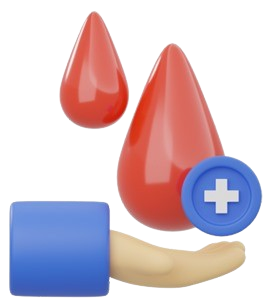

Pessoas com idade entre 16 e 69 anos, que pesam mais de 51Kg e com boa condição de saúde.
No dia anterior à doação, é recomendado comer refeições leves e evitar alimentos gordurosos. É importante não estar em jejum durante o procedimento. Não é permitido consumir bebidas alcoólicas nas 12 horas anteriores e ou fumar duas horas antes de doar sangue.
É obrigatório apresentar documento oficial com foto dentro do prazo de validade.
